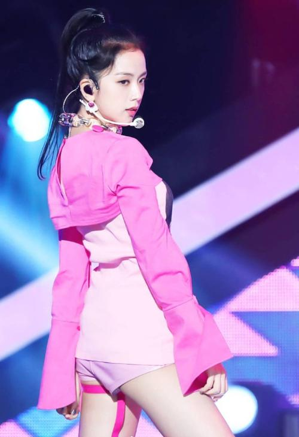
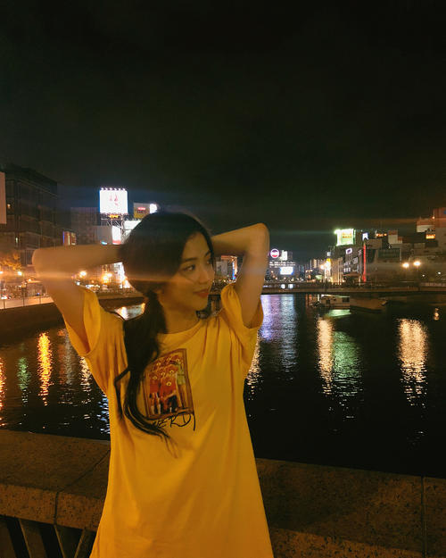
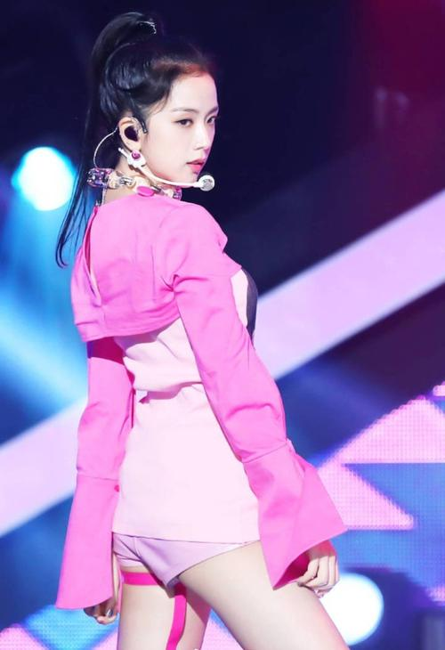
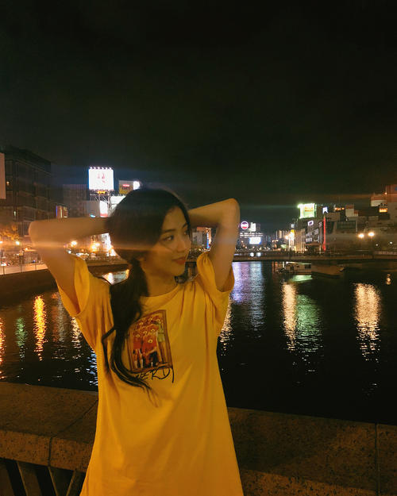

Jisoo (김 지 수), was born on January 3, 1995 in South Korea gyeonggi-do gwacheon, south Korean singer, actor, host, women's singing group BLACKPINK members. On August 8, 2016, she debuted as a member of Blackpink and released her first single album "Square One" with the group. On November 1, the group released their second single album "Square Two". February 5, 2017, started to work as the music program "popular songs" MC; On June 22, the group released the single "As If It's Your Last"; On August 30, the group officially released their Japanese music album "BlackPink". On June 15, 2018, the group released their debut mini-album Square Up. In January 2019, the group started "Blackpink 2019 World Tour with Kia [In Your Area]" WORLD TOUR; On April 5, the group released their mini-album "Kill This Love". On October 25, the group released the single "Kiss and Make Up", a collaboration with Dua Lipa. On May 28, 2020, Sour Candy, a cooperative single with Lady Gaga, was released with the group. On August 28, the group released a cooperative single "Ice Cream" with Selena Gomez. On October 2, THE group released their official ALBUM "The Album".
Jisoo not only has outstanding appearance, but also in singing, dancing and acting. When photographing a photo, there is a youthful and energetic side, and there is a subtle sexy little woman side, exquisite features, which brighten your eyes. In "The Producers," her brief appearance is impressive. Her natural expression and acting in the commercials also make people look forward to her growing potential as an actress.
In her MV for Spoiler, Kim Ji-soo caught the audience's attention by showing her face as a girl in love, expressing her sadness at the prospect of parting, and even revealing her real tearful acting. At the same time, but also send out a pure and lovely charm, attracted everyone's attention. Her good appearance as well as her pure and lovely image dazzled the audience.
 

Look at next page


Look at next page